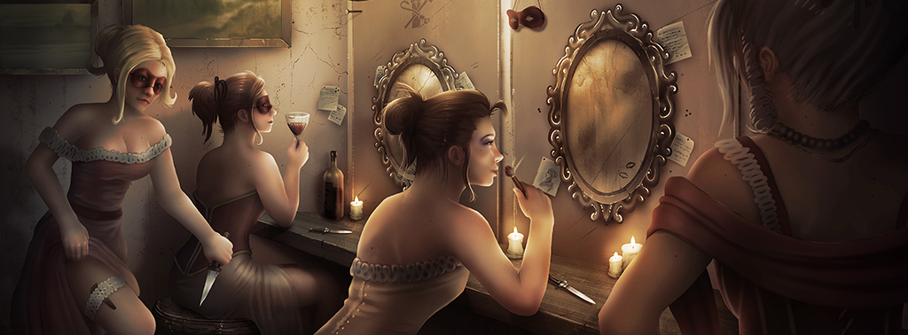

The Guild as it stands today has gone through many transformations, though its origins come from the old tradition of the shipbuilding Castellani family and the fishing
Nicolottis. The two warring families created the first guilds in Venice, groups that ostensibly would work together for the benefit of their own workers, but
realistically were only created to organise the fighting between the two families. The Guild consists of both of these groups and more, coming from destitution into
power.
Venice always had a number of guilds representing the various businesses of the city. As Venice struggled financially the Guild's lost their power and pull over
the running of Venice, eventually becoming nothing more than a collection of out of work, impoverished commoners. This lead to them turning towards the criminal
underbelly of Venice, in little time the Thieves Guild became the biggest and strongest guild of Venice.
The Thieves guild had agents all over the city and were therefore aware of all deals and every coming and going in the city. Muggings, extortion and smuggling became the de facto
trade of the city, and the unemployed had found a home.

Over time the Thieves Guild made deals with the other guilds throughout Venice. First the brothels joined into an agreement; as the brothels with their harlots and Gnaga
were in prime position to discover the secrets of people around Venice, this was a perfect fit for the already discreet Thieves Guild. The Thieves would give money or
provide protection for the brothels; in return, the brothels would give the Thieves secrets about their clientele. Wealthy aristocrats would visit a brothel, the
Thieves Guild would be informed and while the aristocrat enjoyed the company of the brothel, his noteworthy possessions are stolen. Or they might lie in wait on the
way to his home, waiting to ambush the unwary noble. Either way, his visit to the brothel becomes a lot more costly than the noble originally thought.
Over time more and more guilds and organisations had dealings with the Thieves Guild. Most had to accept lowering their proud morals and standards in order to
feed and clothe their loved ones. By the time the Rent appeared, the Thieves Guild was simply known as The Guild, having had partnerships with dozens of
different guilds, all now under one banner.
Since the Rent in the Sky, due to the massive increase in trade and the ruling classes apathy to the general citizenry, membership to the Guild has swelled
significantly. Venice has become a dangerous place for the average citizen, the attacks from the patrician Masquerattas, the Vatican attacking the
citizenry, the rumours of monsters from the canals and the Doctors night time testing on unwary citizens, people look for protection and the Guild
are all too happy to provide it, for a fee. Once you've accepted the Guild's protection, it's a lifetime agreement and there are expectations on the
person gaining the Guild's protection. Many have been awoken in the night expected to shelter a wanted thief in hiding from the authorities, or had a
knock on the door and been told to come and fight for the Guild, saying no is not an option.
As the threats in Venice grow, the Guild's influence grows. It is said that you cannot walk down any alley in Venice without the King of Thieves knowing exactly when
you walked down there, who you spoke to and what you were carrying. Nowadays the Guild don't go looking for alliances, people come to them and for the right price,
they'll listen to anyone about an agreement.
“So you wish to join us do you?” A man cloaked in shadow asked calmly, his voice giving no sign of personality or interest. “Why should I allow you to join us?
What can you give to us in return for membership into the Guild?”
“Yes sir, we need the protection of the Guild. The Patrician guards have been overturning stalls and stealing our wares. Business is so bad right now that we may have
to sell shop and get out of town,” the butcher seethed, his voice full of hatred. Beside him other shopkeepers murmured in agreement, for each one felt that the guards
- and by extension the Patricians - who were entrusted to look after the city had been negligent in their duty.

The shadowy figure took a moment before he spoke, seemingly weighing up his options, “So you feel that those whom you trusted to protect you have abandoned you? You
feel like those in power have abused and taken you for granted? It is true that this city's nobility have fallen into their own hedonism and have discarded their
duties of running the city. Because of this, it has fallen to us to carry the slack; we, the Guild, now run this city. Through our membership you shall never have
to fear for your stalls again - your stock will never falter.”
After deliberating for a short while, the disgruntled group of shopkeepers each agreed to join, in turn pledging themselves to serve with utmost loyalty.
With a smirk the man finally revealed himself to the group. He wore a white overcoat with a long hood and a golden mask that concealed his face. A red cape draped his
shoulders and a pair of swords hung either side of his waist. “There are three rules which you must uphold at all times if you are to be a true member of the Guild:
the first is Omerta- which means ensuring complete secrecy, no matter the cost. This is the most important rule and failure to follow this will cost you your life.
The second is Fedelta- you will swear your allegiance to myself and the Guild. The final rule is Fraternita- all business orientated dealings must be authorised and
sanctioned by the Guild.”
There was a slight murmur of concern but the man chose to ignore this and continue. “If you swear to uphold these three rules then I welcome you as comrades in arms.
Together we shall build a better Venice, one free of corruption from the so called nobility.” To show his respect, the man embraced each new member in turn. “It is a
good day, but now we shall have to blood you as new recruits. We are attacking a focal point for the Patricians tonight: the Accademia di Belle Arti di Venezia
in the Dorsuduro district. My contacts have told me that the art academy has many priceless pieces that are being sold and it would be a real shame if they went missing
before the auction.” The hooded man grinned in anticipation.


The Guild have a lot of options, able to find a character to deal with any threat and are therefore incredibly versatile: powerful Command Abilities, very specialised
Heroes such as the Capodecina, who are themselves very powerful leaders who are dazzlingly fast, able to land on monsters from the rooftops. The Henchmen can be
fielded in high numbers which makes up for their individual weaknesses. Though the Guild might not have a strong magical presence, the Black Lamp provides them
with a strong defense against magic.